Руководство администратора
Как управлять врачами, пациентами, звуками, тестами и релизами приложения через административную панель платформы.
Платформа теперь называется Платформа TNOISE — раньше «Платформа тестирования слуха». В шапке админки написано TNOISE, приложение врача называется TNOISE — приложение врача, приложение пациента — TNOISE. Учётные записи, права и данные не затронуты.
У приложения пациента сменился внутренний идентификатор пакета
(com.medear.patient_app → com.tnoise.patient).
Для Android это означает новое приложение: обновиться поверх уже
установленного APK нельзя. Пациенту нужно удалить старое приложение,
установить новый APK и войти заново — код быстрого входа и привязка
устройства при этом сбрасываются.
1 Что такое админка и вход
Административная панель (Django admin) — служебный интерфейс платформы. Через неё
решают то, чего нет в приложениях врача и пациента: заводят врачей, загружают
звуки, разбирают инциденты по журналам, публикуют новые версии приложения.
Открывается в браузере по адресу /admin/ на вашем стенде.
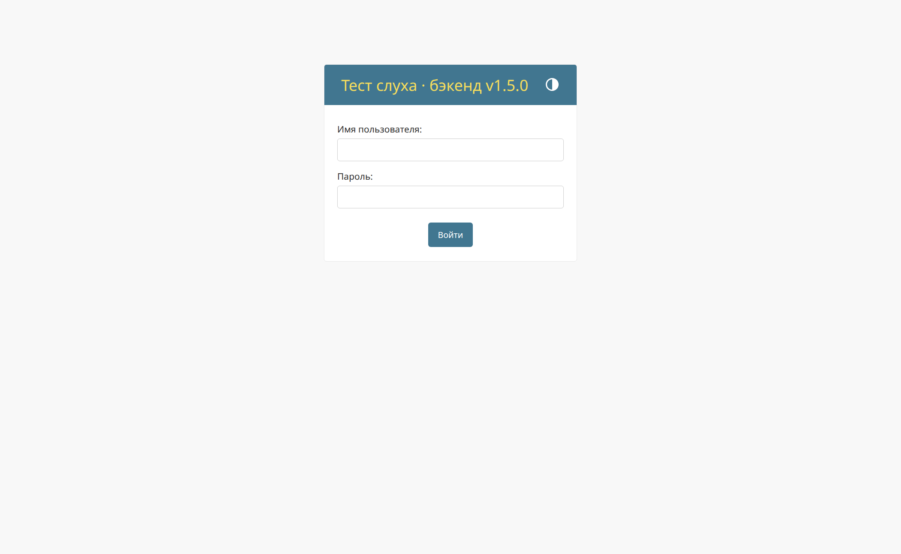
После входа открывается главная страница со списком разделов. Слева — те же разделы в виде бокового меню; оно есть на каждой странице.
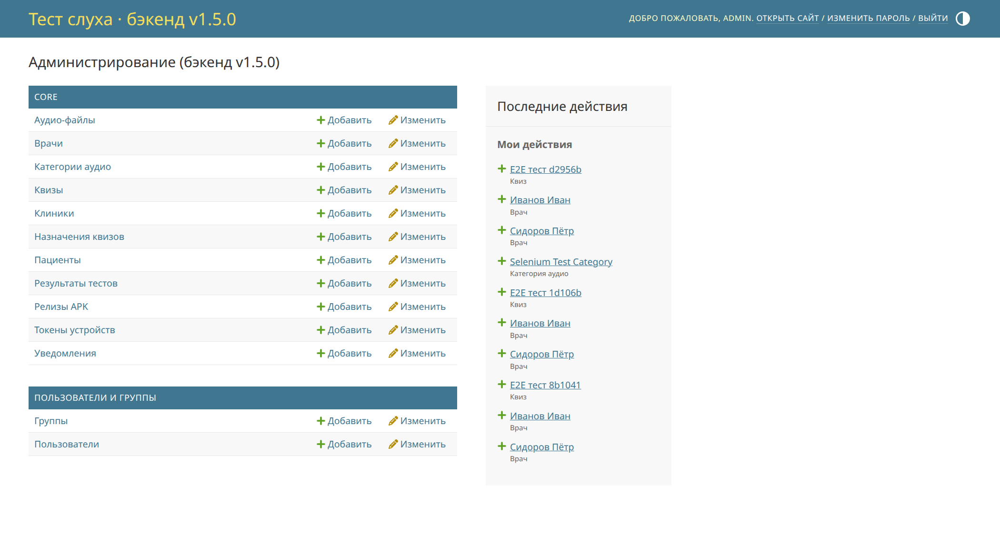
В синей полосе сверху и в заголовке главной страницы показана версия бэкенда
(например, бэкенд v1.5.0). Называйте её при обращении в поддержку —
так проще понять, что развёрнуто на стенде.
Разделы CORE и что за ними стоит:
| Раздел | Назначение |
|---|---|
| Врачи | Учётные записи врачей. Регистрация только отсюда. |
| Пациенты | Пациенты, их тесты и логи; передача врачам и клиникам. |
| Клиники | Справочник клиник. |
| Категории аудио | Дерево категорий для звуков. |
| Аудио-файлы | Библиотека звуков (загрузка новых — только здесь). |
| Квизы | Тесты и входящие в них вопросы. |
| Назначения квизов | Кто какой тест должен пройти и в каком статусе. |
| Результаты тестов | Пройденные тесты (неизменяемы). |
| Токены устройств | Привязка устройств пациентов. |
| Уведомления | Системные уведомления врачам (только просмотр). |
| Релизы APK | Версии приложения пациента для скачивания. |
2 Врачи
Врача может завести только администратор — публичной регистрации нет. В списке видно ФИО, клинику, email, включено ли логирование и ссылку на журнал действий.
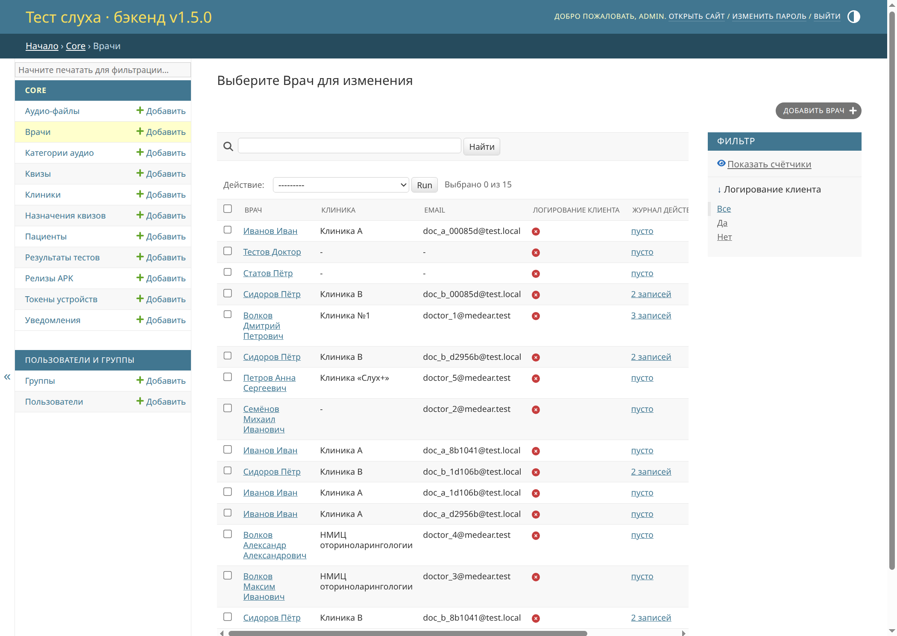
Создать врача
Нажмите Добавить. В форме заполняются и данные врача, и его учётная запись входа.
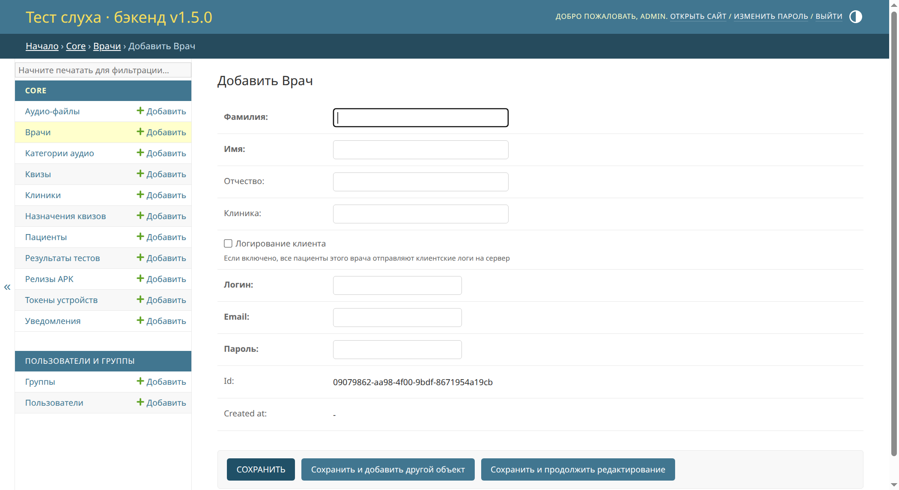
- Заполните фамилию, имя, отчество.
- Выберите клинику (необязательно).
- Задайте логин, email и пароль — с ними врач будет входить в своё приложение.
- Логирование клиента — если включить, приложения всех пациентов этого врача начнут присылать на сервер логи запросов (нужно для разбора проблем). По умолчанию выключено.
- Нажмите Сохранить.
В карточке врача пароль не редактируется (там можно поменять ФИО, клинику, email и логирование). Чтобы сбросить пароль, откройте Пользователи и группы → Пользователи, найдите нужный логин и смените пароль там.
Журнал действий врача
Ссылка Журнал действий в списке (или в карточке врача) открывает
историю его действий в приложении: вход, просмотр пациентов, назначение тестов и т.д.
Записи показаны свежими сверху; журнал можно скачать файлом
.jsonl для передачи разработчикам.
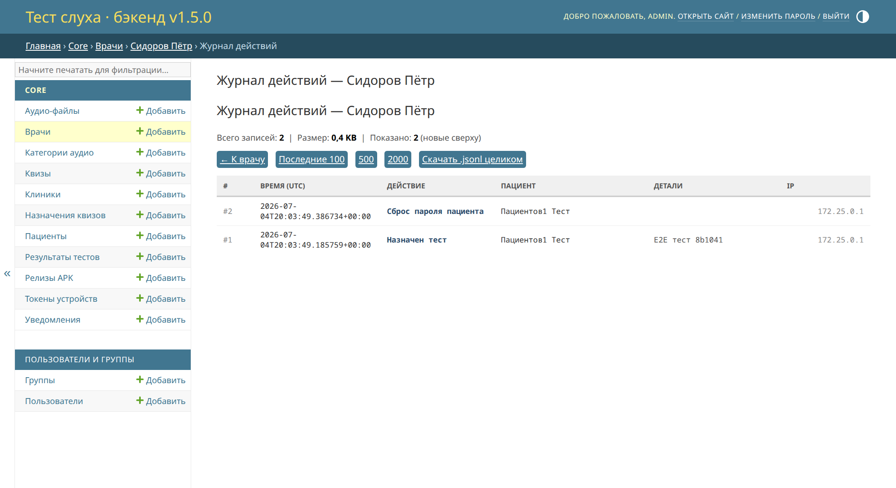
3 Пациенты
Обычно пациентов заводит врач в своём приложении. Через админку удобно искать пациентов, исправлять данные, разбирать логи и выполнять массовые операции. В списке под каждым пациентом видно врача, клинику, дату рождения, сколько тестов ему назначено и пройдено, и объём логов.
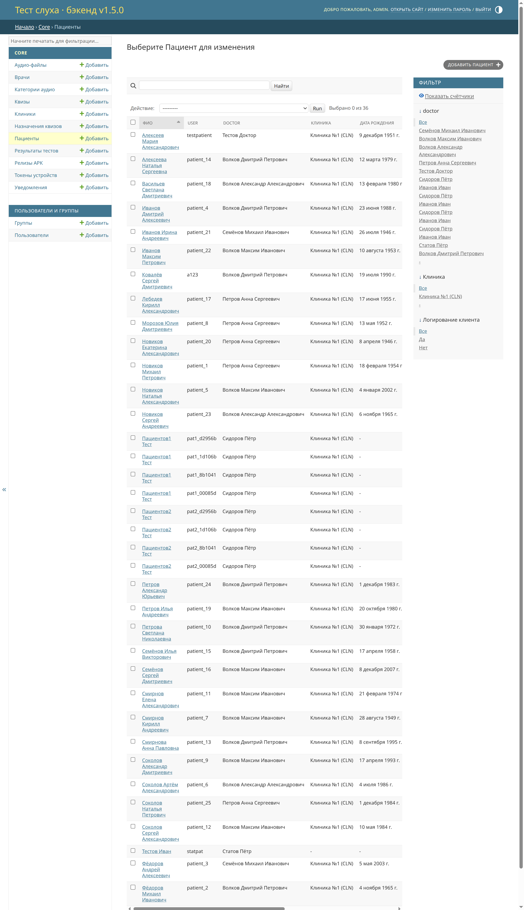
Карточка пациента
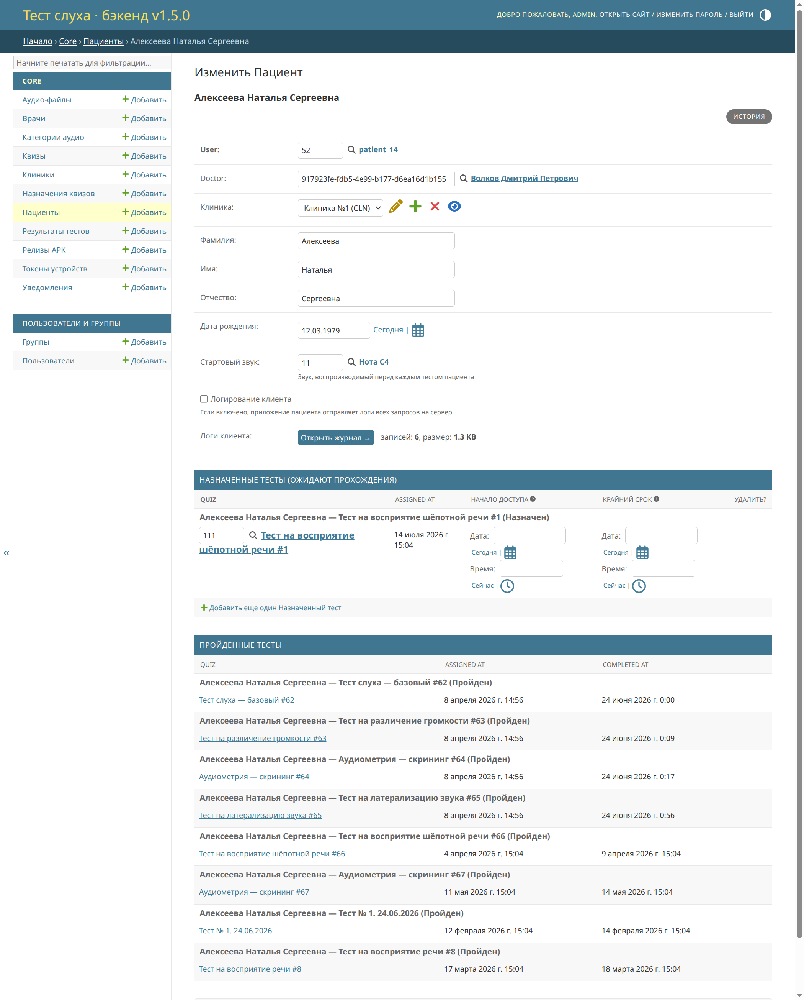
- Врач, клиника, ФИО, дата рождения — редактируются.
- Стартовый звук — звук, который пациент слышит первым при открытии теста (помогает выставить громкость).
- Логирование клиента — присылать ли логи запросов приложения пациента.
- Назначенные тесты (ожидают прохождения) — можно добавить назначение, задать окно доступа (начало и крайний срок) или снять назначение.
- Пройденные тесты — только для чтения: их не редактируют и не удаляют.
Логи клиента
Кнопка Открыть журнал в карточке (или ссылка в списке) показывает запросы приложения пациента: метод, путь, HTTP-статус (подсвечен цветом), длительность и текст ошибки. Логи копятся, только если у пациента включено логирование.
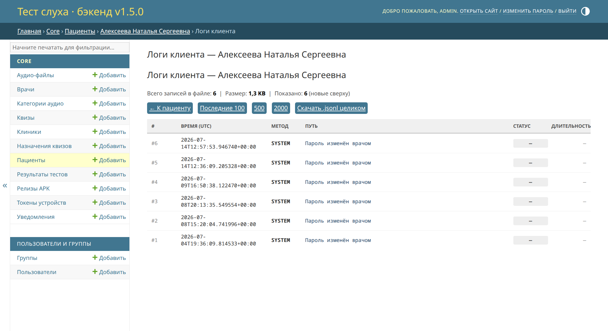
4 Массовые действия с пациентами
В списке пациентов отметьте нужные строки галочками, выберите действие в выпадающем списке сверху и нажмите Выполнить. Оба действия ниже сначала показывают страницу подтверждения — до неё ничего не меняется.
Переназначить другому врачу
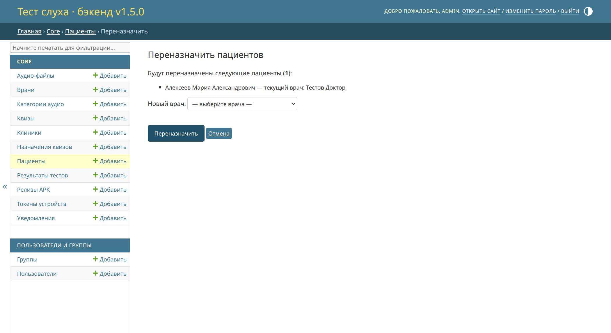
Выберите нового врача и подтвердите. Пациенты, которые уже закреплены за этим врачом, будут пропущены. Прежний врач каждого переназначенного пациента получит уведомление о передаче — как при передаче через приложение врача.
Перенести в другую клинику
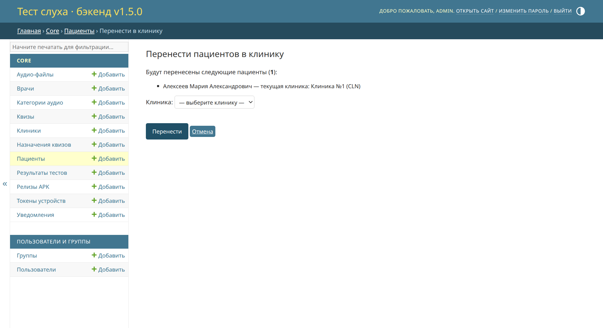
Действие меняет только привязку к клинике; врач и тесты пациента не затрагиваются.
5 Клиники
Справочник клиник: название, аббревиатура, адрес и число закреплённых пациентов. Аббревиатура показывается в компактных местах интерфейса (например, «Клиника №1 (CLN)»).
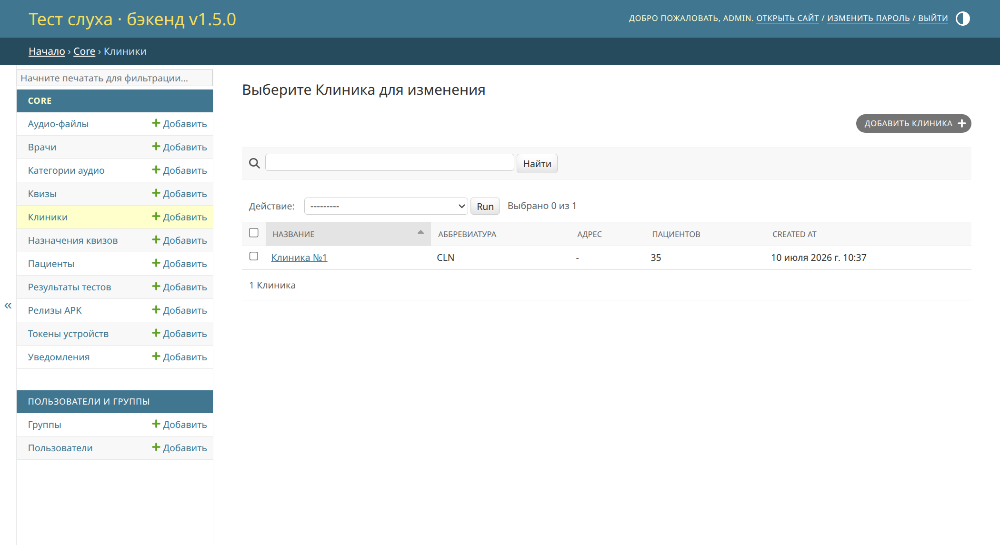
6 Аудио: категории и файлы
Из звуков собираются тесты. Категории аудио — дерево для их раскладки: у категории может быть родитель. В списке видно родителя и сколько звуков в категории.
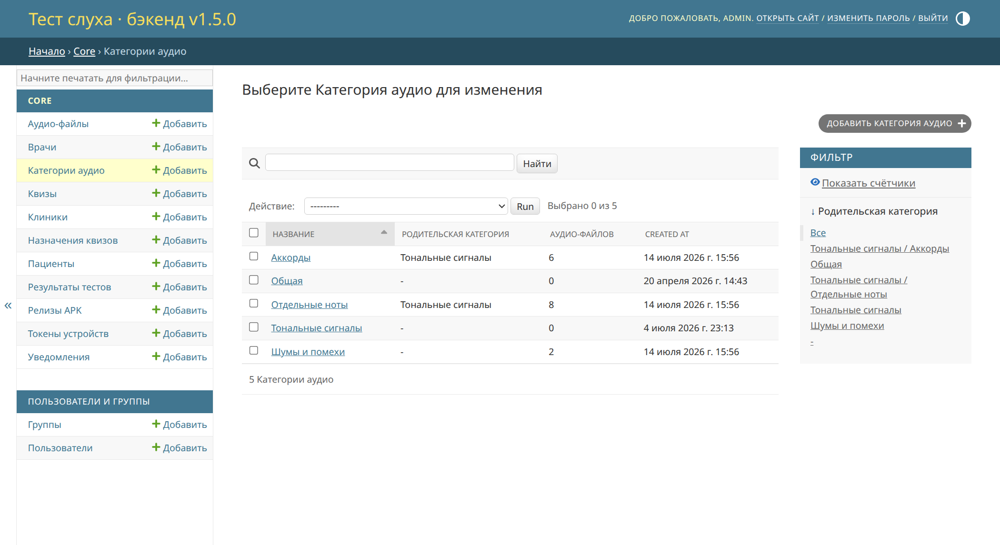
Аудио-файлы
Загрузка новых звуков делается здесь — в приложении врача этого нет. У файла — название, категория, длительность и дата загрузки.
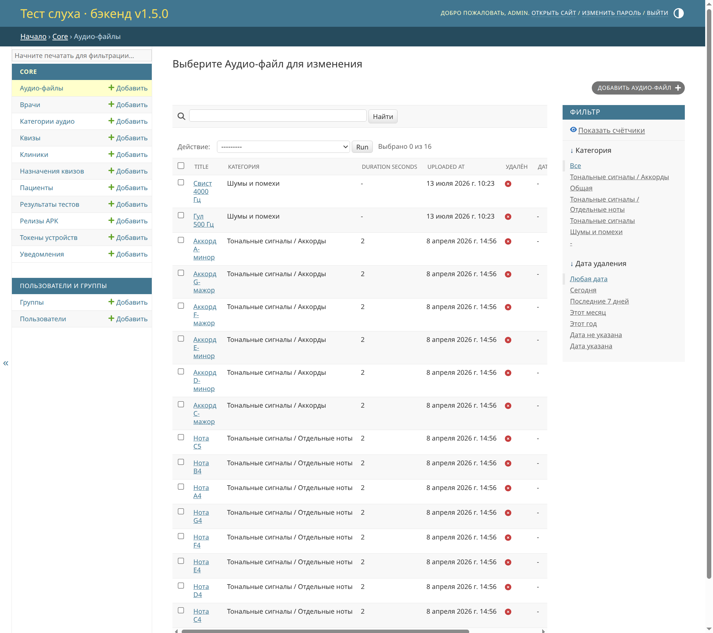
Аудио-файлы удаляются «мягко»: запись помечается удалённой, но физически остаётся, чтобы уже пройденные тесты и их результаты не сломались. Удалённый звук можно восстановить действием «Восстановить выбранные».
7 Тесты и назначения
Квиз (тест) — это набор вопросов, по одному на звук. В карточке теста задаётся название, выбираются звуки и порядок вопросов.
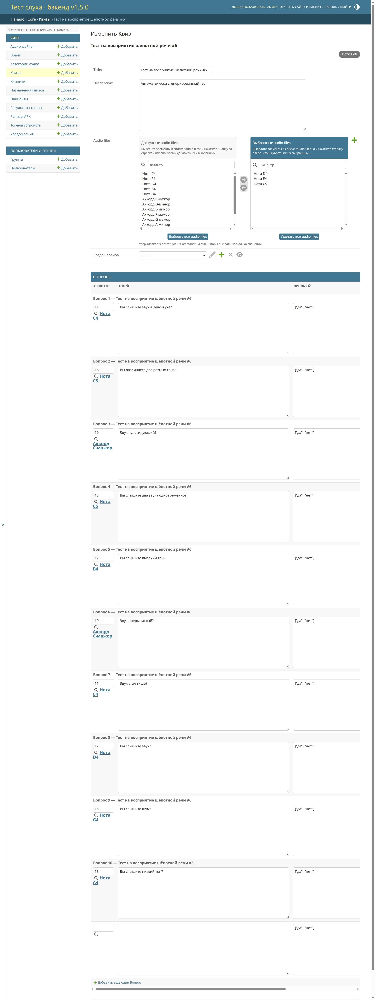
- Блок выбора аудио позволяет перенести нужные звуки в тест из общего списка.
- Каждый вопрос ссылается на звук; для него задан порядок и правильный ответ («Слышу» по умолчанию).
Назначения квизов
Раздел Назначения квизов показывает, кому какой тест назначен и в каком статусе: назначен (ожидает) или пройден. Здесь же видно окно доступа (начало / крайний срок) и дату прохождения.
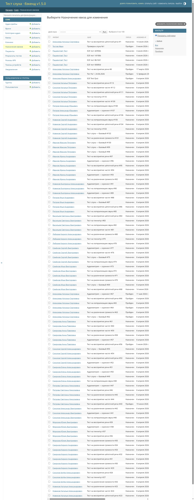
Повторно пройти завершённый тест пациент не может. Чтобы измерить динамику, назначьте тест ещё раз — появится новое назначение.
8 Результаты тестов
Пройденные тесты с баллами и датой. Ответы, счёт и время сдачи доступны только для чтения — результат неизменяем после создания. Это защита медицинских данных от случайных правок.
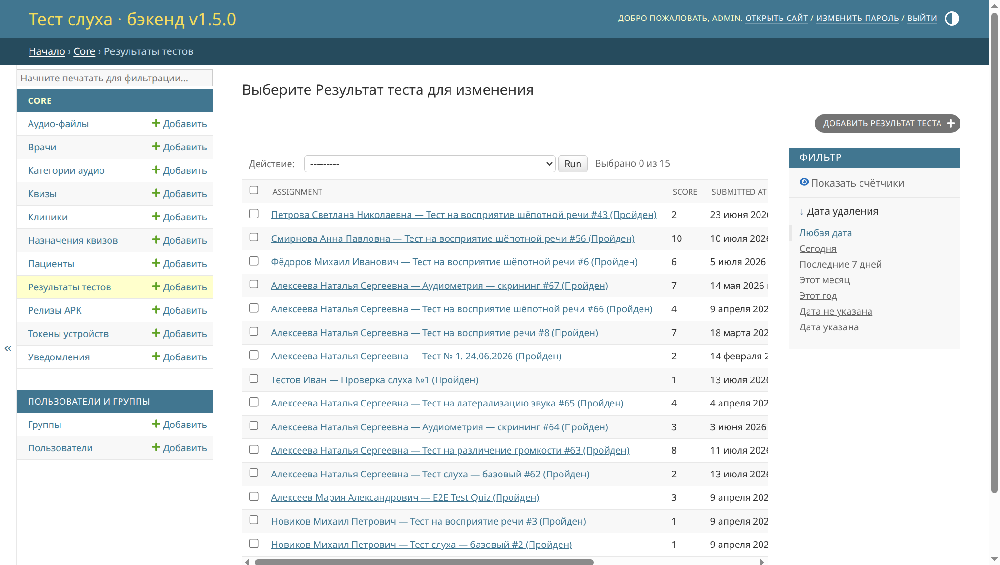
Удалить — мягко: результат помечается удалённым, но остаётся в базе, его можно восстановить. «ФИЗИЧЕСКИ удалить выбранные» — необратимо стирает запись. Пользуйтесь физическим удалением только осознанно.
9 Токены устройств
Пациент входит логином и паролем один раз, после чего его устройство получает токен и приложение больше не спрашивает пароль. Раздел показывает токены, к какому пациенту привязаны, активны ли и когда использовались в последний раз.
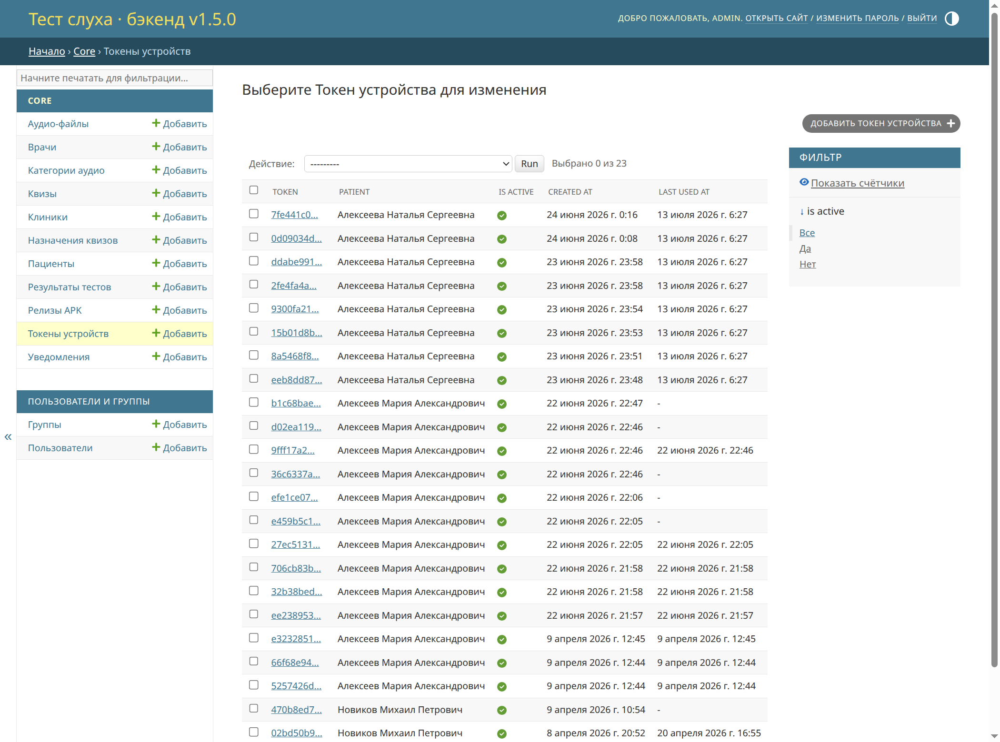
Чтобы «отвязать» устройство (например, телефон потерян), откройте токен и снимите признак активен — приложение на этом устройстве попросит войти заново.
10 Уведомления
Системные уведомления, которые платформа отправляет врачам: пройден тест, передан пациент, добавлен новый пациент. Раздел только для просмотра — уведомления создаёт система, вручную их не редактируют.
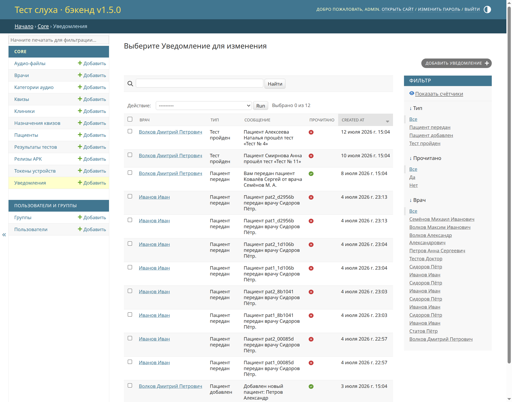
11 Релизы APK
Здесь публикуются версии Android-приложения пациента. Каждый релиз — это файл APK с номером версии; один из релизов помечен дефолтным. APK доступны для скачивания без пароля по ссылкам платформы.
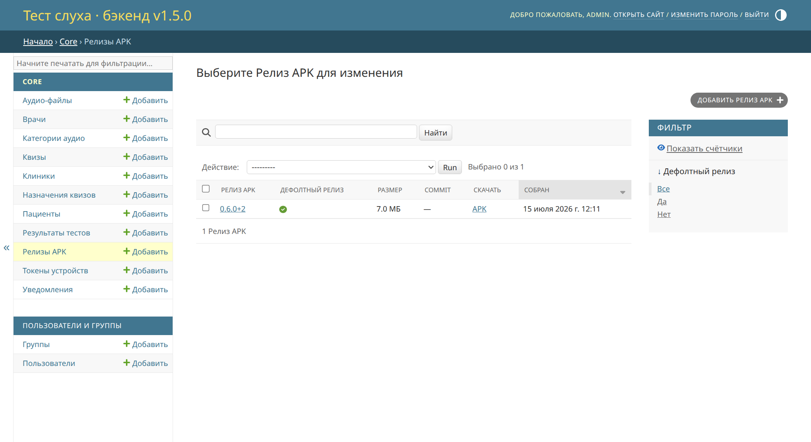
- Нажмите Добавить, приложите файл APK и укажите версию.
- Сохраните — размер файла заполнится сам.
- Чтобы сделать релиз тем, что скачивается по умолчанию, отметьте ровно один релиз и выполните действие «Сделать дефолтным».
Дефолтный релиз всегда доступен по постоянному адресу /releases/latest.apk —
её удобно давать пациентам, она не меняется при выходе новых версий.
12 Мягкое удаление и восстановление
Для аудио-файлов и результатов тестов применяется «мягкое» удаление: при удалении запись не стирается, а помечается удалённой (видно, когда и кем). Такие записи остаются в списке с пометкой.
- Обычное удаление (кнопкой или действием «Удалить») — мягкое, запись можно вернуть.
- «Восстановить выбранные» — снимает пометку удаления, запись снова активна.
- «ФИЗИЧЕСКИ удалить выбранные» (только у результатов) — стирает запись безвозвратно.
Смысл в сохранности медицинских данных: удаление звука не должно ломать уже пройденные тесты, а результаты не должны исчезать по случайному клику.
13 Частые вопросы
Как сбросить пароль врача?
В карточке врача пароля нет. Откройте Пользователи и группы → Пользователи, найдите логин врача и смените пароль там.
Как завести пациента?
Обычно это делает врач в своём приложении (там логин и пароль пациента создаются автоматически). Через админку пациентов правят и переносят; создание вручную требует привязки к учётной записи пользователя.
Удалил звук — пропадут ли старые результаты?
Нет. Звуки удаляются мягко, пройденные тесты и результаты не затрагиваются. При необходимости звук можно восстановить.
Можно ли исправить результат теста?
Нет, результаты неизменяемы. Ответы, счёт и время сдачи доступны только для чтения.
Пациент сменил телефон — что делать со старым устройством?
В разделе Токены устройств снимите признак «активен» у старого токена. На новом устройстве пациент войдёт логином и паролем заново.
Как выложить новую версию приложения пациента?
Раздел Релизы APK: добавьте APK, укажите версию, при необходимости сделайте релиз дефолтным действием «Сделать дефолтным».